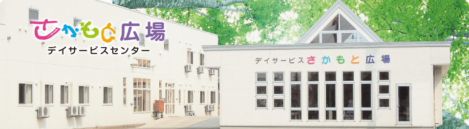
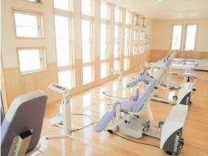
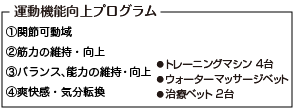
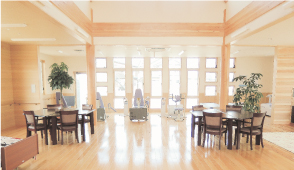
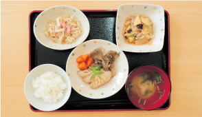
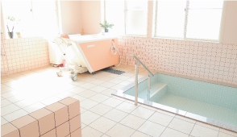

- 
県産材をふんだんに使用し、木の温もりを感じることが出来ます。
さらに、明るく開放的な空間で、安心・快適な介護のサービスを提供いたします。
さらに、明るく開放的な空間で、安心・快適な介護のサービスを提供いたします。

機能訓練を充実
接骨院の経験を活かし機能訓練に特化。 介護予防運動指導員の資格を持つ柔道整復師による運動指導により、運動器の機能向上に務めます


木の温もりを感じられる安心の空間
県産材をふんだんに使用し、木の温もりを感じることができます。

考えられた安心・安全の食事
カロリーや栄養バランスに配慮し、健康的に優れなおかつ食べ飽きない献立を日替わりで作成します。

明るく解放的な充実のサービス
明るく解放的な空間で、安心・快適な介護のサービスを提供いたします。
● アクセス●
〒037-0023
青森県五所川原市広田字榊森51-7
☎0173-34-0168
見学・体験利用も受付しています。
お気軽にお問い合わせ下さい。
お気軽にお問い合わせ下さい。